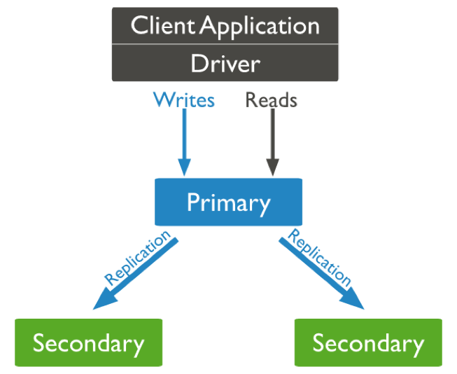

Module 5 - Scalability
By Almog Laktivi|  |
Tag-Aware Sharding
How to run Replica-Set Instances
mongod --port 27017 --dbpath /srv/mongodb/att-rs-0 --replSet att-rs --smallfiles --oplogSize 128
mongo --port 27017
rs.initiate({"_id": "att-rs", "members":[{"_id": 1, "host": "localhost:27017"}]})
rs.add("localhost:27018")